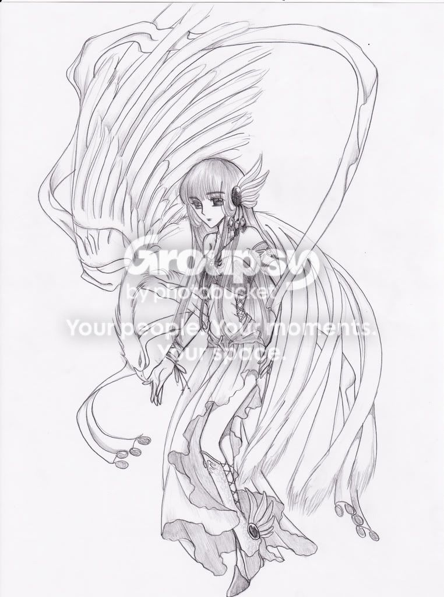

ถ้าภาพพวกนี้อนาจาร แล้วภาพที่เราวาดละ!!

http://eco.froztic.in.th/archive/ecofanclub/
http://eco.froztic.in.th/archive/ecofanclub/viewtopic.php?f=21&t=57964
 วาดได้สวยสุดยอดเลยค่ะน่ารักมากๆแรเงาก็เก่ง(เราแรเงาห่วยมากเลย
วาดได้สวยสุดยอดเลยค่ะน่ารักมากๆแรเงาก็เก่ง(เราแรเงาห่วยมากเลย  )
)


capire เขียน:วาดสวยจังคับว่าแต่โซลเพลเยอร์ออกเล่ม3ตั้งแต่มะไหร่นิ(ผมอ่านอยุ)ป.ล.เกี่ยวมั้ยนี่=="
ยังงัยก็เอามาลงอีกนะคัฟฟ :first07: